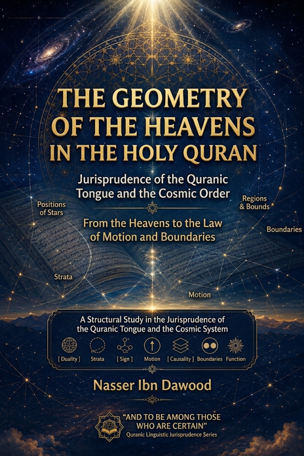

Nasser Ibn Dawood

Text extracted from the author-supplied Word edition; consult the original source.
Preparing the reader…
The Architecture of the Heavens in the Qur'an
A Structural Reading of the Cosmic Verses
Condensed Conceptual Edition
I. The Global Knowledge Manifesto
Knowledge is a universal right. The author firmly believes that wisdom should not be locked behind paywalls or language barriers.
Global Access Policy: All books in this library are available for free in multiple digital formats (PDF, HTML, DOCX, TXT).
The Digital Library: As of early 2026, the collection hosts 68 volumes (34 in Arabic and 34 in English), fully optimized for AI-assisted research and digital archiving.
Official Platforms:
Main Website: nasserhabitat.github.io/nasser-books/
GitHub: nasserhabitat/nasser-books
II. Translator's Note: The Bridge of Meaning
This English edition is a condensed conceptual adaptation. It is not a word-for-word translation, but rather an "extraction of essence." It presents the core philosophical framework in accessible English, omitting the exhaustive linguistic debates and classical references found in the original Arabic text.
For the academic researcher: The original Arabic version remains the primary source for comprehensive linguistic analysis, detailed exegesis (Tafsīr), and the complete bibliography.
Introduction: The Question That Begins Before the Model
Look up.
Every human being begins with the same experience: a sky above, an earth beneath, light and darkness, stars appearing at night, the Sun crossing the day, and a horizon separating what is near from what seems unreachable.
The Qur'an repeatedly asks us to look again.
Not merely to see the heavens, but to consider them.
Not merely to count their objects, but to recognize their signs.
Not merely to ask how the universe works, but to ask what kind of order it reveals.
The question of this book therefore begins neither with a telescope nor with a cosmological theory.
It begins with a text.
What kind of cosmos does the Qur'an construct when its cosmic vocabulary is read as an interconnected system rather than as a collection of isolated descriptions?
The Crisis of Reading
Modern readers approach the Qur'anic cosmic verses carrying a pre-existing model in their minds. This is not a neutral act. It shapes—and often distorts—what the text is allowed to say.
We can identify three dominant approaches today:
1. The Harmonizing Reading
This attempts to map modern scientific theories (the Big Bang, relativity, cosmic expansion) directly onto Qur'anic verses. The text becomes a servant to contemporary physics. When theories change, the interpretation must change with them.
2. The Defensive Reading
This insists on an alternative model—sometimes a flat earth, sometimes a geocentric cosmos—and interprets everything through that lens. The text is forced into a rigid framework that often confuses functional description with geometric assertion.
3. The Symbolic Reading
This treats cosmic descriptions as pure metaphors, stripping them of any material significance. The heavens become "spiritual states," the earth becomes "the human heart," and the verses lose their connection to the observable world.
Each of these readings shares the same error.
They begin with a model and then search the text for confirmation.
This book proposes another way: Structural Reading.
Part One: The Methodological Foundation
The Jurisprudence of the Qur'anic Tongue
Before we ask what the sky is made of, we must ask how the Qur'an itself defines and relates its cosmic vocabulary. This requires a methodological shift—a Fiqh al-Lisān al-Qur'āni (The Jurisprudence of the Qur'anic Tongue)—resting on four principles:
1. The Denial of Synonymy
In the Qur'an, no two words perform the exact same function. Samā' (sky) is not samāwāt (heavens). Najm (star) is not kawkab (planet). 'Urūj (ascension) is not ṣu'ūd (climbing). Each word carries a distinct structural role.